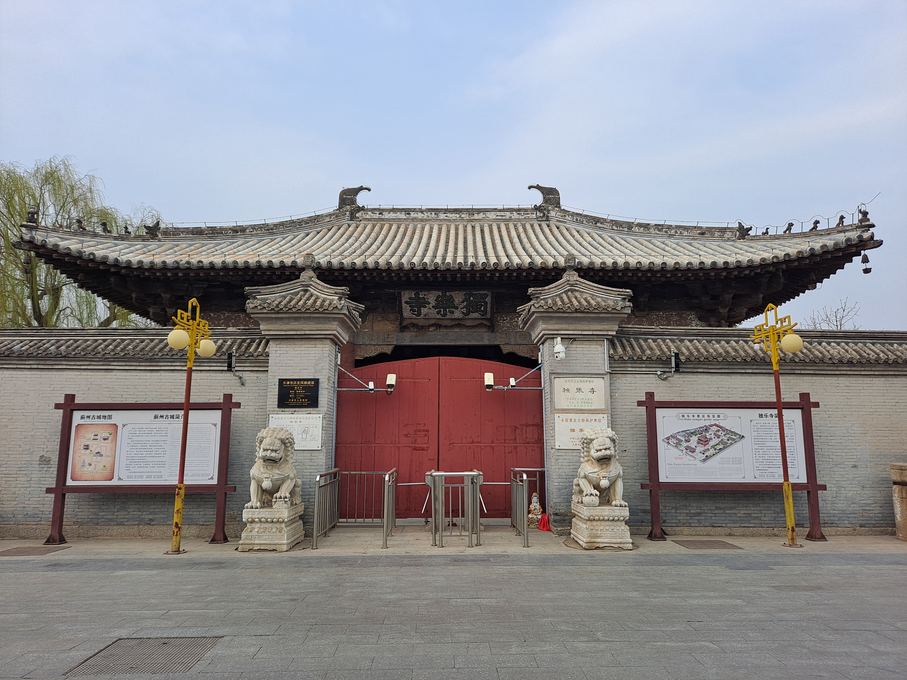
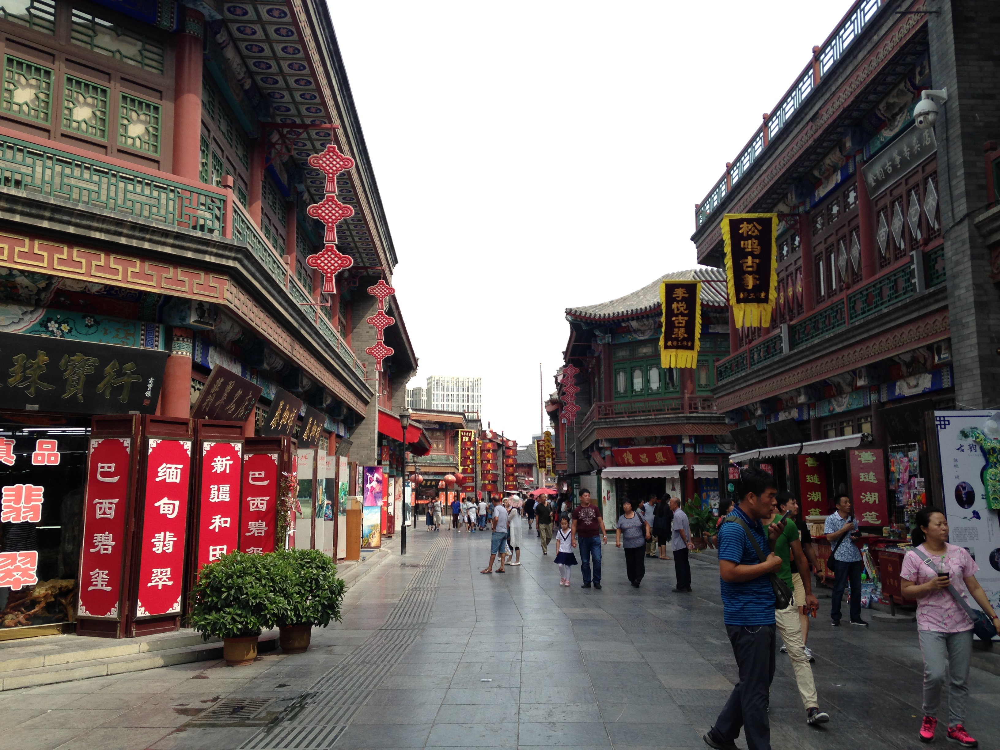
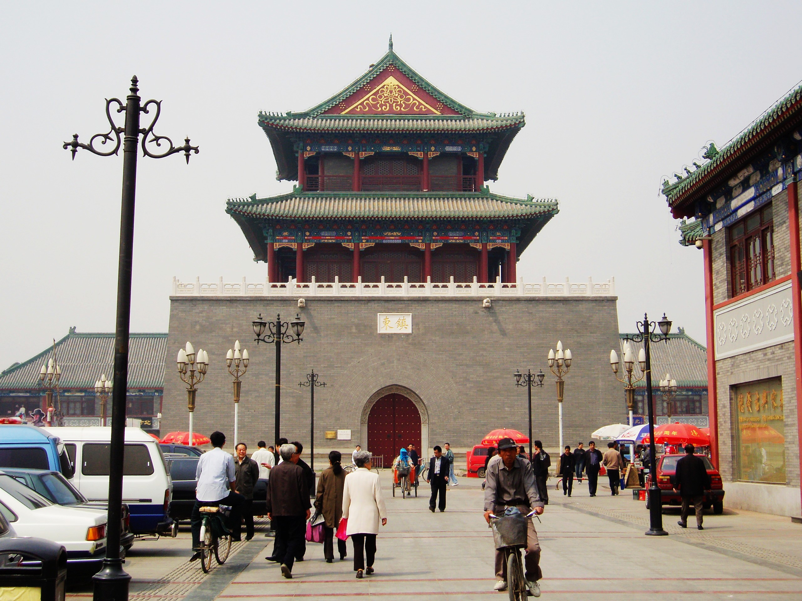
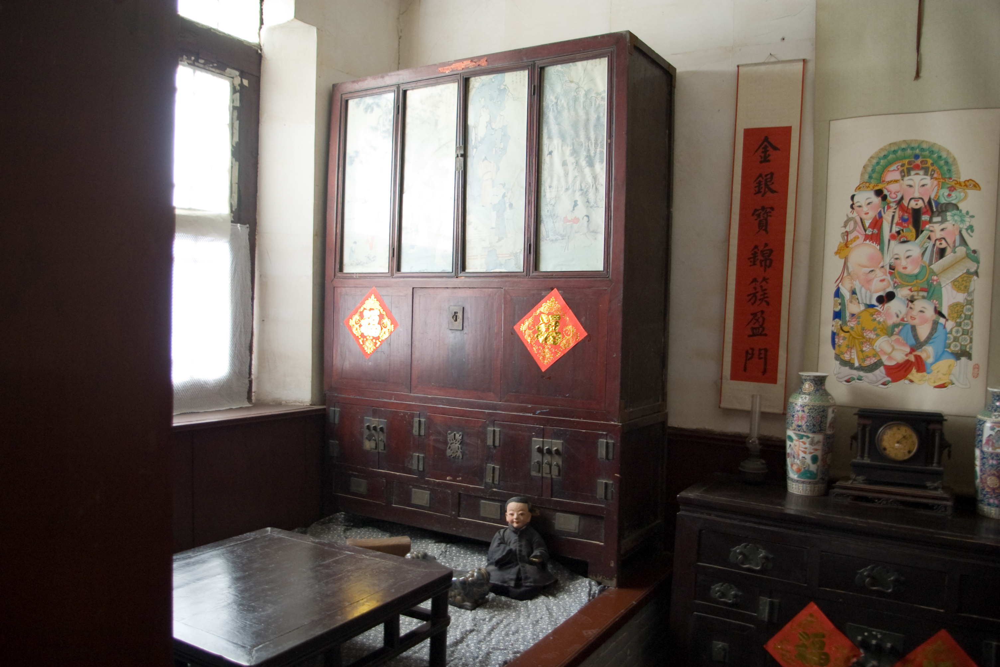

一眼千年 · 天津古建演进图谱
从辽金木构的抗震奇观，到元明清三朝运河海运的繁庶盛景，五处古迹勾勒出天津城市的千年文脉年轮。
独乐寺重建 · 辽代木构三绝
中国现存最古老的木结构楼阁式建筑，23米观音阁经28次强震屹立不倒，被梁思成先生盛赞为“无上国宝”。
独乐寺重建 · 辽代木构三绝
观音阁经28次强震屹立不倒，被梁思成先生盛赞为“无上国宝”。
天后宫始建 · 沽水漕运祖庙
“先有天后宫，后有天津卫。”元代海运通漕，敕建天妃宫保佑舟楫往来，奠定直沽聚落繁盛之基。
天后宫始建 · 沽水漕运祖庙
“先有天后宫，后有天津卫。”元代开漕保佑舟楫往来。
玉皇阁敕建 · 仙阙临三岔河
天津市区现存最早的明代道教木构建筑群遗构，清虚阁重檐歇山飞阁凌空，是漕运船夫祈佑的重要水标。
玉皇阁敕建 · 仙阙临三岔河
市区现存最早的明代道教木构高阁，清虚飞阁临水矗立。
设卫筑城 · 天津鼓楼晨钟暮鼓
明成祖朱棣正式赐名“天津卫”，建老城修鼓楼，悬挂3吨大铁钟，成为城市城防指挥与作息中心。
设卫筑城 · 天津鼓楼晨钟暮鼓
朱棣赐名天津卫，建老城修鼓楼，悬挂明代大铁钟。
石家大院 · 华北第一豪宅
津门八大家尊美堂故居，占地万余平米，18座院落通达，民间最大室内戏楼与绝妙砖雕展现津商鼎盛气象。
石家大院 · 华北第一豪宅
津门八大家尊美堂故居，民间最大室内戏楼与绝妙砖雕。
千年名胜 · 营造大观
每一座古建筑均已开辟专属沉浸式详解档案，拒绝“功能开发中”的等待，即刻深入探秘。

首批国保第77号 辽代 · 984年蓟县独乐寺
无上国宝距今天津1040年历史的辽代木构楼阁，通高23米观音阁经28次强震屹立不倒。内塑16米十一面观音像，山门为中国现存最早庑殿顶。

国家5A级古文化街 元代 · 1326年天津天后宫
津门民俗源头中国现存年代最久的天妃庙宇之一，坐西朝东面向海河，现为天津民俗博物馆。每年农历三月二十三“皇会”巡游名扬海内外。

明成设卫城标 明代 · 1404年天津鼓楼
城防原点天津卫三宗宝之一，通高27米。青砖城台四向开门分别题额“镇东、安西、定南、拱北”，二层悬明代重逾3吨铁铸大钟。

华北第一宅 清代 · 1875年杨柳青石家大院
北方民居冠冕津门八大家石元仕故宅“尊美堂”，占地万余平米，278间房屋。坐拥北方民间规模最大之封闭木构戏楼与绝伦砖雕、木雕艺术。
 市区最古明构
明洪武 · 1370s
市区最古明构
明洪武 · 1370s
敕建玉皇阁
道阙凌虚紧邻海河与运河三岔河口要津，为天津市区现存最早的明代道教木构建筑群遗存。核心清虚阁重檐歇山顶高台矗立，八卦藻井精绝。
古建知识达人挑战
已熟记五大名胜？测测你的古建鉴赏与历史储备！通过15道精选题，赢取专属「津门古建金牌学者」电子研学证书。
研学专线 · 沉浸寻古
由文史研学专家设计的经典一日与两日游览线路，科学串联交通、亮点、美食与行囊贴士。
【辽韵探幽】蓟北千年辽构与长城揽胜一日游
独乐寺深度研学
重温梁思成考察足迹，观赏山门庑殿顶鸱吻、23米观音阁斗栱抗震层与十一面观音泥塑。
渔阳古街品味午餐
漫步千年渔阳古街，品尝蓟州特产碗坨、羊汤、一品烧饼及塞上酸梨糕。
蓟州白塔与鲁班庙
距独乐寺南300米，探访辽代白塔亭阁式与密檐式复合塔刹，赏鲁班庙古代木匠技艺雕刻。
盘山日落归舟
“早知有盘山，何必下江南。”登盘山观三盘胜境与夕阳染翠，尽兴而归。
活态传承 · 津门非遗与风味
古建筑是凝固的史诗，非遗与市井风味则是流淌其间的烟火灵魂。
杨柳青木版年画
半印半画，色彩明丽，娃娃题材胖白喜庆，寄托“连年有余”、“富贵平安”的美好愿景。
泥人张彩塑
始于清代道光年间，形神毕肖，以生动写实的手法将市井百态、戏曲人物塑于尺幅指掌之间。
津门风筝魏
骨架采用打眼扣榫结构，可折叠装盒便于携带，彩绘逼真，兼具北方硬朗与南方灵巧。
相声茶馆与煎饼馃子
听一回哏儿都相声，品一笼狗不理包子，尝一勺热腾腾的石磨绿豆煎饼馃子，感受津味人间。
智慧出行行囊 · 津门游览贴士
京津城际：北京南站至天津站仅需 30分钟，车次密集随到随走。
市内地铁：地铁2号线直通鼓楼站与古文化街（东南角站），直达机场与天津西站。
周一例行闭馆：鼓楼博物馆、玉皇阁周一通常闭馆修整，请合理避开周一出行。
实名登记：独乐寺、石家大院支持现场购票，学生证与60岁以上老人享受半价或免票优待。
严禁烟火：千年木结构建筑防火要求极高，全景区严禁携带火种吸烟。
禁用闪光灯：观音阁与石家大院戏楼壁画彩绘极为珍贵，拍摄时请务必关闭相机闪光灯。